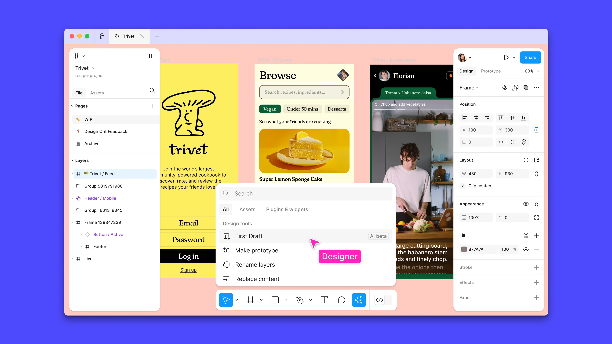

Figma

De acordo com seu próprio site, o Figma é uma ferramenta de design que combina a acessibilidade da web com as
funcionalidades de um aplicativo nativo.
Isso significa que o Figma é disponibilizado via web, com acesso através de qualquer navegador, sem a necessidade de
download ou instalação de algum software. E traz todas as funcionalidades de um aplicativo desenvolvido de acordo com
a base do sistema operacional em que irá operar.
Além disso, o Figma é uma ferramenta de design criada com o objetivo de tornar a prática do design mais acessível.
Para isso, uma versão gratuita está disponível para que mais pessoas possam conhecer a ferramenta e começar na área do design sem muitos investimentos.
O que é possível fazer no Figma?
Sendo uma ferramenta com funcionalidades de design e edição vetorial, o Figma pode ser utilizado para diversas
finalidades. De uma forma geral, o mais comum é que a ferramenta seja utilizada para:
Design de interfaces responsivas para aplicativos, websites e softwares, ou seja, interfaces que se adaptam ao formato
de tela de dispositivos com diferentes dimensões e configurações.
Desenvolvimento de protótipos e fluxos de navegação;
Criação e implementação de Design Systems (sistemas de design);
Criação de peças de e-mail e artes para redes sociais;
Desenvolvimento de apresentações, e-books, infográficos, etc.
Com o auxílio de alguns plugins e features, como Figmotion, LottieFiles e Chart, também é possível realizar alguns
outros tipos de atividades, como criar animações e gráficos com dados reais através da ferramenta.
Características principais:
O Figma tem se tornado cada vez mais popular por conta de suas características inovadoras e que têm ajudado milhares
de profissionais a ter uma rotina de trabalho otimizada.
Vale ressaltar também a importância do Figma como uma ferramenta que tem sido muito utilizada para a entrega de
projetos digitais de ponta a ponta, seja ele um projeto web ou um aplicativo.
Quais profissionais utilizam o Figma?
No quesito empresas que utilizam o Figma, podemos concluir que suas características, qualidades e diferentes tipos de
planos atende desde grandes empresas ou agências até profissionais autônomos e pequenos projetos.
Entre os principais usuários dessa ferramenta, encontramos profissionais como designers de interface do usuário (UI),
designers de experiência do usuário (UX), visual designers, designers de produto, profissionais de marketing e até
mesmo desenvolvedores.
Se você ainda não utiliza essa ferramenta e deseja incluí-la em seu dia a dia de trabalho, com poucos meses de estudo
já é possível dar início aos seus primeiros projetos. Na EBAC, o curso de Figma possui uma duração de dois meses e é
ministrado pelo professor Makson Serpa.
Principais pontos do Figma:
1. Colaboração em Tempo Real:
2. Baseado na Web:
3. Prototipagem Interativa:
4. Componentes Reutilizáveis:
5. Integração com Desenvolvimento: